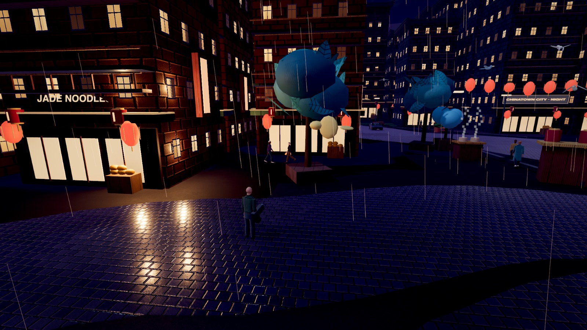
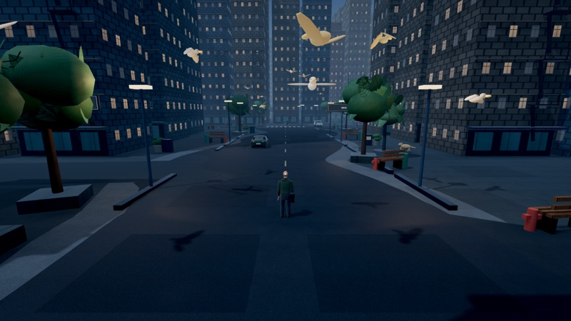
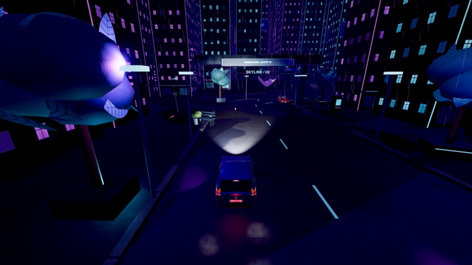
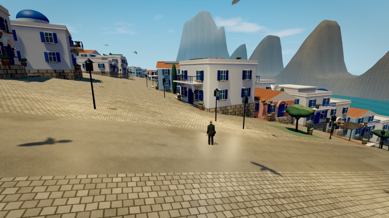
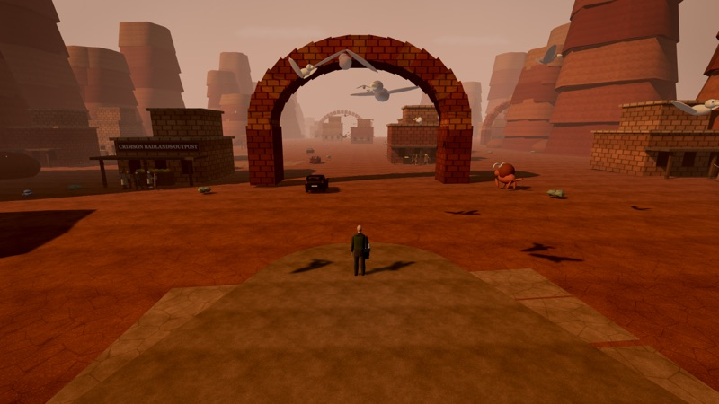
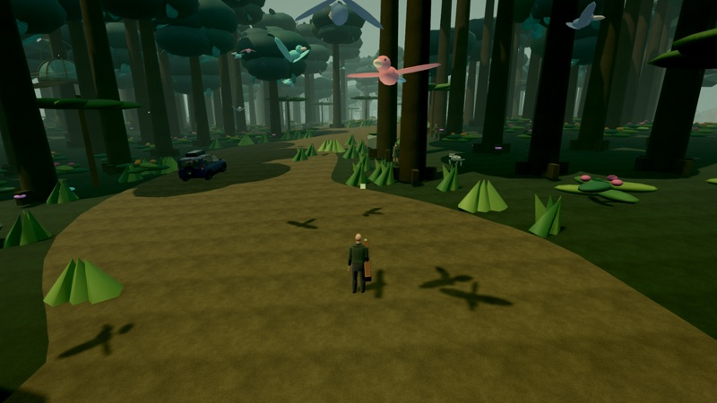
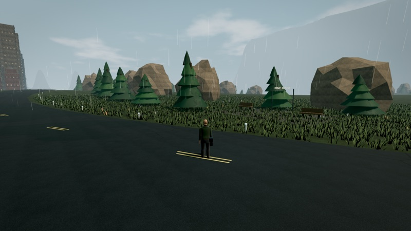
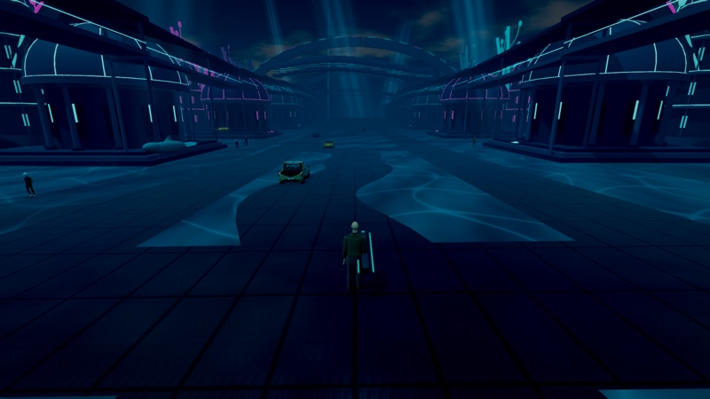
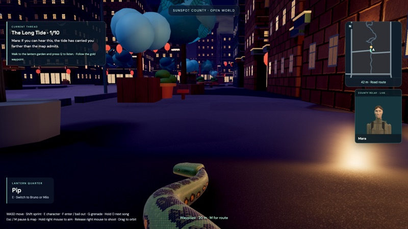

The Game
A stylized open-world adventure. Explore nine connected districts on foot or by car, switch between three characters, and follow a twelve-chapter story.
Current version 1.0.1 · Windows, macOS and Linux · Download files are named “Sunspot County”, the game’s earlier working title.

What you can do
- Nine districts, one mapNeon Heights, Old Keep, Metro Central, Canopy Park, Lantern Quarter, Abyssal Reef, Crimson Badlands, The Caves and Zephiros are joined by highways through the countryside.
- Three charactersPlay as Pip the snake, or as Bruno and Milo. Press E to switch. Pip cannot drive or use weapons.
- Driving and radioEnter cars with F, bail out at speed, and use the in-car radio.
- Destruction and crashesA grenade close to a building can bring it down into rubble. Cars dent, spark and can be wrecked in collisions.
- A story to followA twelve-chapter story with recorded dialogue and a waypoint map. Progress saves on your own computer.
Gameplay video
Screenshots
All screenshots are captured from the game itself, version 1.0.1, on the Ultra graphics setting.

Metro Central 
Night driving in Neon Heights 
Zephiros 
Crimson Badlands 
Canopy Park 
The countryside 
Abyssal Reef 
Pip and the game interface
Content notice
The game includes stylized firearms, grenades, explosions and vehicle collisions that knock down people and animals. It has no official age rating. We recommend it for players aged 16 and over.